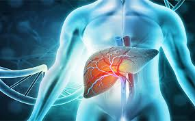

Brain Tumour Segmentation
Leveraging deep learning techniques, I developed an advanced model for brain tumor segmentation.
This work focuses on enhancing the widely adopted UNet architecture by integrating pitchfork bifurcation concepts, leading to more accurate and reliable segmentation results.
The project was conducted using the Medical Segmentation Decathlon (MSD) dataset and aimed to assist in precise tumor delineation for improved diagnostic and treatment planning outcomes in neuro-oncology.

Developed a machine learning model to predict heart disease using patient
data. Utilized scikit-learn for model training and evaluation, NumPy for numerical computations, and
Pandas for data manipulation and preprocessing

Developed a machine learning model to predict students' academic risk
in higher education institutions. Utilized various data features including demographic, academic, and
behavioral data to accurately identify at-risk students. Applied techniques in data preprocessing, feature
selection, and model evaluation using scikit-learn to enhance prediction accuracy.
Engineered a predictive model to identify defects in steel plates using
machine learning techniques. Utilized a comprehensive dataset encompassing various defect types and
leveraged scikit-learn for data preprocessing, feature engineering, and model training. Implemented and
optimized classification algorithms to achieve high accuracy in defect detection, contributing to quality
control and manufacturing efficiency.

Developed a robust predictive model to forecast outcomes for
patients with cirrhosis. Analyzed a diverse set of clinical and demographic data to identify key predictors
of patient prognosis. Utilized advanced machine learning techniques, including feature selection and
model evaluation with scikit-learn, to enhance prediction accuracy and support medical decision making.